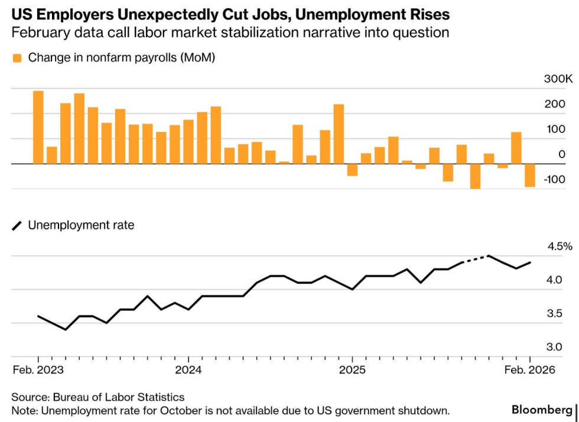
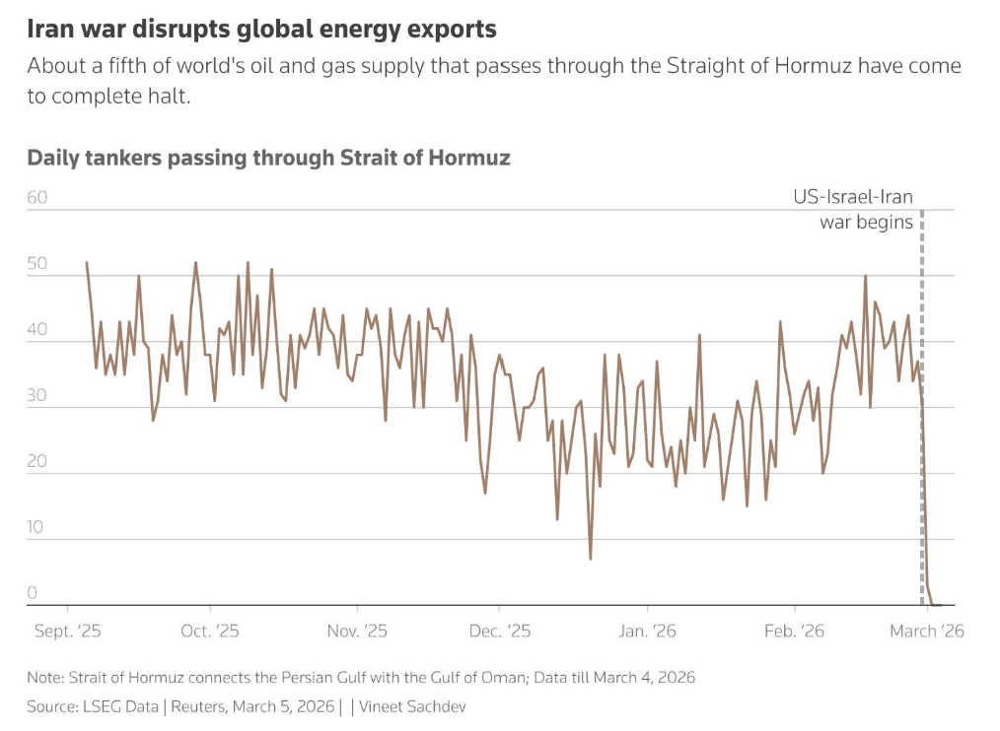
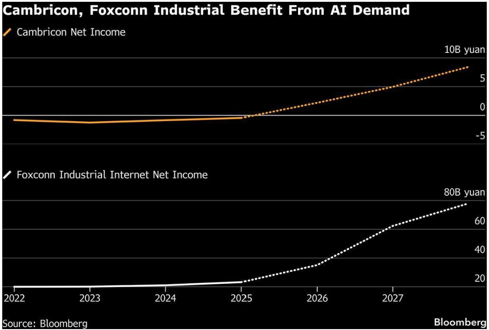

"We're not at war with Iran. We're making sure that they do not have the capability to harm us anymore."
— Markwayne Mullin, Trump's pick to lead the Department of Homeland Security, who then told reporters he misspoke. His predecessor Noem was fired over a $220 million ad campaign featuring herself on horseback. The department created after 9/11 to protect the homeland is shut down, leaderless, and its incoming chief cannot say if the country is at war.
"The sinews of war are infinite money."
— Cicero. One week in, the US has lost $1.9 billion in military equipment across Qatar, UAE, Kuwait, and Bahrain. Tanker freight has doubled. War risk insurance has surged. Gulf states are reviewing hundreds of billions in US investment commitments. The sinews are stretching.
"If you gave Democrats a chance to sell dollar bills for 50 cents, they would try to pass a law that made it happen before just doing it."
— Mark Cuban on Firing Line with Margaret Hoover. Cuban is waging a one-man war on the US healthcare system through Cost Plus Drugs, a pharmacy that publishes every price, marks up 15%, and spends zero on marketing. Four years in, they are still the only pharmacy in America that publishes a price list.

US employers unexpectedly cut jobs. February payrolls fell 92,000 against expectations of +59,000. Unemployment rose to 4.4%. The labour market stabilisation narrative just broke. Source: Bureau of Labor Statistics via Bloomberg.

About a fifth of the world's oil and gas supply passes through the Strait of Hormuz. Traffic collapsed to near zero after the war began. Brent went from $72 to $90 in five days. Source: LSEG Data, Reuters.
The first week of Operation Epic Fury delivered exactly what last Sunday's letter warned about: oil spiked, the Strait of Hormuz shut down, and the market had to decide whether this was a headline event or a structural break. The answer came fast. Brent went from $72 to $90 in five days. Tanker traffic through Hormuz collapsed from 50 vessels a day to near zero. Iran struck US bases across the Gulf, destroying $1.9 billion in military equipment and killing six American soldiers at Camp Arifjan. Three F-15E Strike Eagles were lost to friendly fire from Kuwaiti air defences. Friday's payrolls confirmed the other half of the picture. The economy lost 92,000 jobs against expectations of +59,000. Unemployment rose to 4.4%. War and recession risk arriving in the same week is not a drill.
What is the plan this week?
Everything is hitting at the same time. War, jobs, credit, oil, AI disruption. Last week felt like the kind of week that changes the reference point for everything that follows. The muscle memory of buying dips and waiting for normal is being tested by a market where multiple shocks are compounding rather than resolving. The Strait of Hormuz is effectively closed. Brent rose 30% in a single week. Qatar shut gas liquefaction entirely and says it needs two weeks to restart even if the war ended today. Saudi Arabia and UAE are running out of storage. Iraq may be forced to cut 3 million barrels a day. This is not a war premium. This is systemic fragility.
The US economy lost 92,000 jobs in February while the market expected a gain. Unemployment rose to 4.4%. Participation collapsed. Average hourly earnings came in at 3.8%, above expectations. Falling employment and rising wages at the same time. That is stagflation. Atlanta Fed cut its Q1 GDP tracker from 3.0% to 2.1% on the same day.
I found it hard to write this week. Not because of the uncertainty, that is our job, but because of how the war is being conducted in public. The administration broadcasting military operations on social media like a content strategy is something I cannot get used to. Ben Stiller came out and said he did not give permission for Tropic Thunder clips to be used in what amounts to war propaganda. When actors have to publicly distance themselves from a real war because the government turned it into a meme, something has broken. I do not know what the right word is. Brazen. Unseemly. It does not matter which side you stand on.
Markets weakened but were far from capitulation. S&P down 2%, Dow down 3%, all within a few percent of highs. VIX spiked to 28 twice and came back. The real pain was in Asia. South Korea saw double digit moves in both directions. India, Japan, and China are directly exposed through Hormuz dependency. UK Gilt yields rose 40 basis points, doubling the US Treasury move. The shock is not hitting evenly. It is hitting the most exposed and least flexible hardest.
The dollar was bid but this is not safe haven buying. It is the mechanical unwinding of funding trades and hedged equity positions. Popular FX positions must have unwound substantially last week. The structural weakness view is intact but the positioning is cleaner now. The DXY made new highs after the terrible jobs data on Friday then reversed to new lows after Trump demanded unconditional surrender. Political risk cuts both ways on the dollar.
CPI on Wednesday is the last data point before the Fed goes into blackout for March 18. It will not include the oil spike. Neither will Friday's PCE. Both are pre-war snapshots. But the -92K jobs print cannot be ignored alongside them. The pre-war inflation data and the post-war reality are pulling in opposite directions and the Fed has to sit with that tension in silence for two weeks.
G7 finance ministers meet in France. Three Gulf states are jointly reviewing force majeure clauses on contracts, including hundreds of billions pledged to US investments. If they pull back, the financial pressure on Washington to find an off ramp becomes real. BlackRock capped withdrawals from its $26 billion private credit fund after shareholders requested 9.3%. A major asset manager marked a loan to zero that was at par weeks ago. That is not liquidity. That is valuation. The marks were wrong. Private credit was the canary before the war. The war and stagflation fears are revealing weakness.
I do not have strong conviction this week and I think that is the right posture. Duration is the word and it is the right one. If this resolves in weeks, the damage is absorbable. If it extends into April, the compounding of oil, credit stress, and labour market deterioration creates something much harder to reverse. Stay close to the screen. Let the market tell you what it is doing.
What Did I Learn Last Week?
Mar 2: Markets opened to war. Brent +9%. ISM manufacturing beat at 52.4 but prices paid surged to 70.5, highest since June 2022. Ras Tanura hit by drone.
Mar 3: Hormuz collapsed to near zero traffic. Maersk suspended all cargo. Trump cut off all trade with Spain. Iraq cut Rumaila by 700K bpd. Qatar shut downstream production.
Mar 4: Two Sessions opened. China growth target 4.5 to 5%, lowest since 1991. $1.9 billion in US military equipment destroyed. Six soldiers killed at Camp Arifjan.
Mar 5: Trump fired Noem over $220M vanity ads. Named Mullin as DHS replacement. Macron updated France's nuclear doctrine for first time in 30 years. SoftBank seeking $40B loan for OpenAI.
Mar 6: NFP -92K vs +55K expected. Unemployment 4.4%. BlackRock gated private credit fund. Oracle cutting thousands. Stargate talks with OpenAI broke down. Trump demanded unconditional surrender.
Mar 7: Fed blackout begins. Atlanta Fed cut Q1 GDP from 3.0% to 2.1%. Russia providing Iran intelligence to target US warships. Qatar oil minister: weeks to months to normalise even if war ends today.
What To Look Out For Next Week
Mon Mar 9: China February CPI and PPI. Japan wages. Pakistan holds rates. Baden-Württemberg election. F1 opens in Melbourne. US/South Korea Freedom Shield drills begin.
Tue Mar 10: Saudi Aramco Q4 earnings, the most consequential corporate report of the week. China Jan-Feb trade data. Japan Q4 GDP revised. Oracle reports.
Wed Mar 11: US February CPI (core exp. +0.2%), the week's main event and last data before Fed blackout. Germany CPI. US 10-year note auction ($39B). G7 finance ministers convene in France.
Thu Mar 12: India February CPI. Turkey rate decision with oil at $90. US 30-year bond auction ($22B). China Two Sessions concludes. ASEAN economic ministers in Manila.
Fri Mar 13: US January core PCE deflator (exp. +0.4%, YoY to 3.1%). Q4 GDP second estimate. UMich sentiment captures first days of war. Sovereign ratings: Italy, Greece, Saudi Arabia, Qatar.
All week: Aramco, Oracle, HPE, BMW, Porsche, Volkswagen, Daimler Truck, Rheinmetall, CATL, Cambricon, Dollar General, Ulta Beauty. Fed blackout ahead of March 18.
Regimes
Stagflation replaces flight to safety as the dominant regime. Last week bonds rallied even as PPI came in hot. This week oil +30%, jobs -92K, and 2yr yields spiking across US, UK, Germany. The flight to safety bid is losing to inflation fear. Central banks are stuck. changed
Dollar structurally weak but mechanically bid. Last week DXY stalled at 98. This week rallied to 99.70 on position unwinds before reversing on Trump's unconditional surrender demand. Range 98.45 to 99.70. When the unwind completes, the structural view reasserts. held
Credit stress was building before the war. Now it is accelerating. BlackRock, Blackstone, Blue Owl all gating. Leveraged loans falling across sectors. AI disruption hitting software credit. Oil hitting everything else. new
Shifts (if → then)
War extends beyond March → oil through $100. Gulf states invoke force majeure on US investments. Central banks pause all easing. new
CPI prints hot Wednesday → stagflation hardens into Fed blackout. Dollar extends bid. Replaces last week's Hot NFP shift, which fired. new
War finds off ramp within two weeks → oil retreats, rate cut hopes snap back, dip buyers vindicated. But credit damage and labour weakness do not reverse as fast. new
Gulf sovereigns pull back US investments → financial pressure on Washington to negotiate. new
Tails
Hormuz closed through April. $150 oil. Everything correlates. carried
Private credit contagion. Gating spreads beyond the big three. CLO machine stalls. new
Russia providing Iran targeting intelligence on US warships draws direct US-Russia confrontation. War scope expands. new
Beyond Next Week
Fed meeting Mar 17-18. Updated dot plot and projections. First meeting since the war and NFP collapse.
ECB meeting Mar 18-19. Rate hike by year end now more likely than a cut. Lagarde has to address the energy shock.
G7 finance ministers output from this week's France meeting will shape the diplomatic and financial response into late March.

China's AI hardware story is about earnings going vertical. Cambricon from near-zero to 7 billion yuan by 2027. Foxconn Industrial from 20 billion to 70 billion. The divergence between US AI sentiment (fading) and China AI sentiment (accelerating) is a trade in itself. Source: Bloomberg.
The full edition includes 35+ curated charts and infographics with commentary.
For the complete visual edition, email hoelon at lengleng dot com